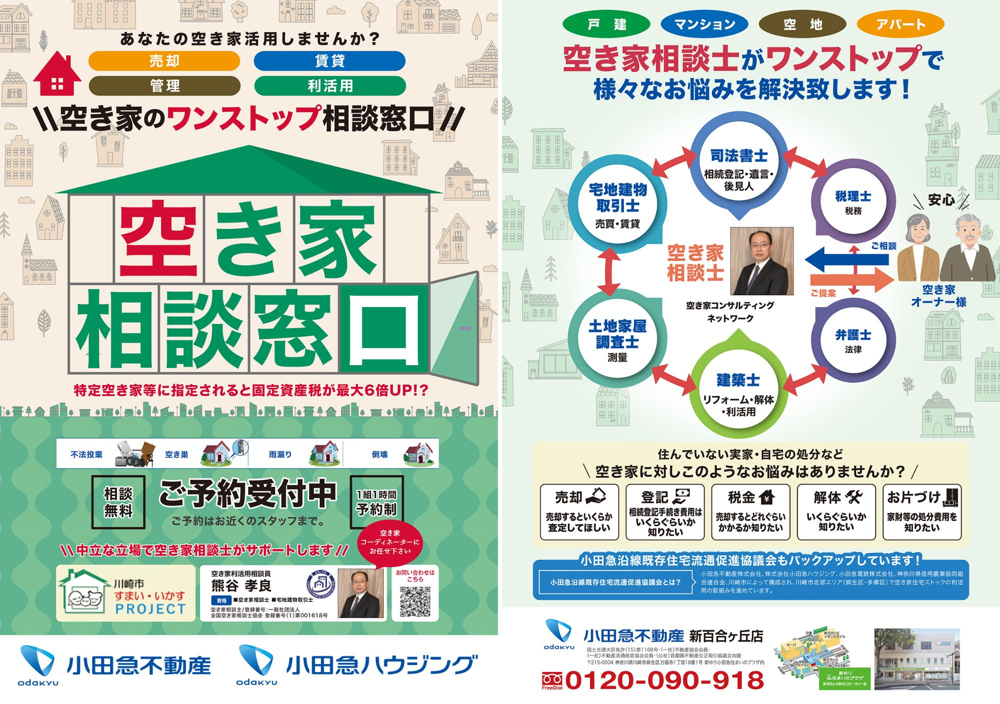

空き家相談窓口を開設

小田急不動産・小田急ハウジングでは、空き家の売却、賃貸、管理、利活用などに関する相談を受け付ける「空き家のワンストップ相談窓口」を開設しました。
空き家に関する悩みは、売却や賃貸だけでなく、相続登記、税金、解体、家財整理、リフォーム、管理など多岐にわたり、相談者にとっては、どこに、何から相談すればよいか分かりにくいという課題があります。
本窓口では、空き家相談士が中立な立場で相談者の悩みを整理し、必要に応じて司法書士、宅地建物取引士、税理士、建築士、弁護士、土地家屋調査士などの専門家と連携しながら、課題解決をサポートします。
相談は予約制・無料で、1組1時間を目安に受け付けています。空き家を売却したい、賃貸や管理の方法を知りたい、相続や税金、解体、家財整理について相談したいなど、さまざまな悩みに対応します。
空き家相談窓口は、空き家になる前、または課題が大きくなる前に相談できる入口として、空き家の予防と利活用を支える取組みです。